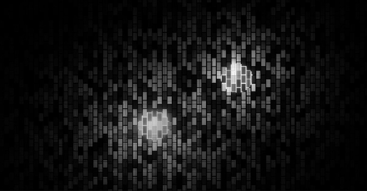

A palavra “bit” é a abreviação de “binary digit” (dígito binário). Ele é a menor unidade de informação usada em computação e pode ter o valor de 0 ou 1. Basicamente, representa a presença ou ausência de sinal elétrico em um circuito. Os computadores processam dados em linguagem binária, onde cada bit é um capacitor carregado (1) ou não (0).
Um byte é uma unidade de medida que representa a quantidade de dados armazenados em um dispositivo eletrônico. Ele corresponde a 8 bits. Com um byte, podemos representar caracteres alfanuméricos, como letras e números. Por exemplo, a letra “A” é representada por um byte (8 bits).
